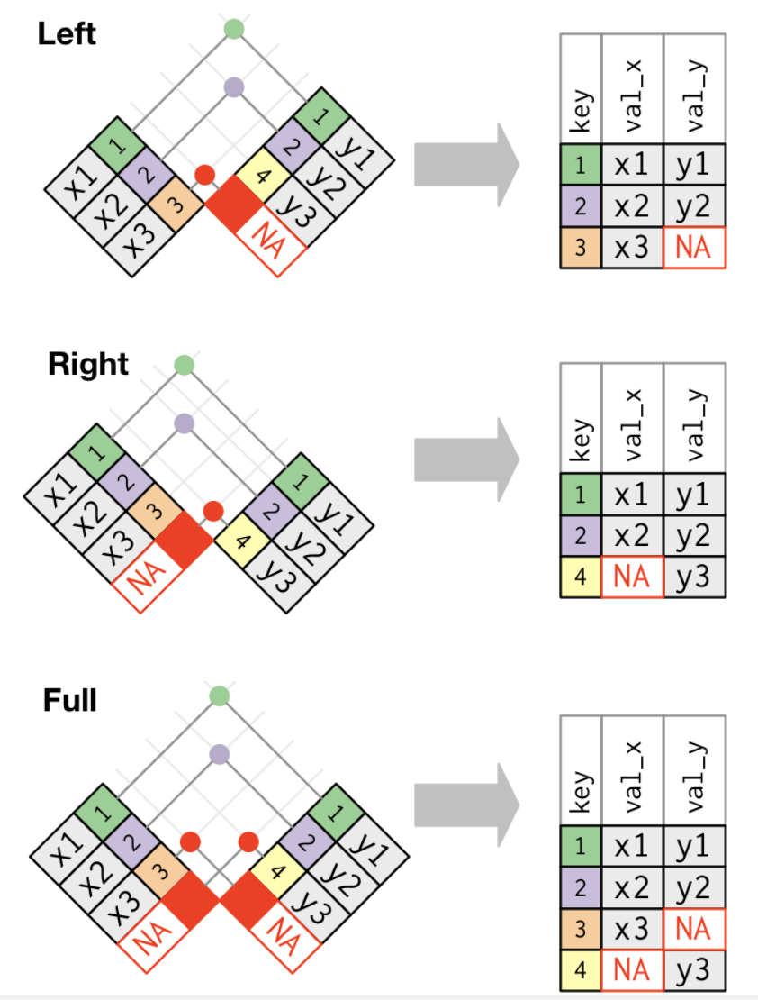
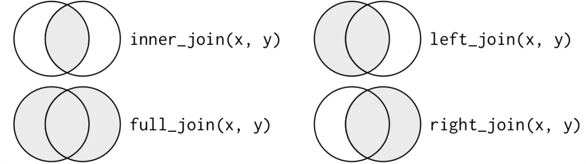

5 Rによるデータ操作
この章では、Rを用いたデータ操作の基本的な方法を学びます。 この章は何度も読み返し、繰り返し練習してください。 ここでは、なぜRを使うと便利なのかを分かってもらうために、Excelの操作と比較する形で、Rのデータ操作の基本を学びます。
5.1 データの読み込み
5.1.1 CSVファイルの読み込み
多くのプログラミング言語で、読み込むデータとして最も多いのが、CSV形式のファイルです。ファイルの拡張子は.csvです。 CSVとは、Comma Separated Valuesの略で、カンマで区切られたデータのことです。 次のような形をしています。
企業ID,決算年月,売上高
13,2020/03,1000
13,2021/03,1200
13,2022/03,1500
24,2020/03,2000
24,2021/03,2200
24,2022/03,2500
33,2020/03,3000
33,2021/03,3200
33,2022/03,3500このように、値とコンマ,のみで構成されたファイルのため、余計な情報が入っておらず、またファイルサイズも小さく、加工が簡単なので、データのやり取りによく使われます。
ではファイルを読み込んでみます。ここでは、松浦のウェブサイトにあるデータkeshohin_2023.csvを読み込んでみます。 Rの場合は、read.csvという関数を使って、URLを直接指定して読み込むことができます。読み込んだデータをdfという変数に代入しています。
Excelの場合は、インターネット上のデータを直接取り込むことは難しいので、いったんパソコンの中に保存してから、ファイルを開くとします。
df <- read.csv("https://so-ichi.com/kesho_2023.csv")- URL
https://so-ichi.com/kesho_2023.csvをブラウザに入力してファイルをダウンロードし、任意の場所に保存 - 「ファイル」から「開く…」をクリックして、保存したCSVファイルを選択し「開く」をクリック
5.1.2 Excelファイルの読み込み
MS Excelのファイルは拡張子が.xlsx、古いMS Excelだと.xlsです。 RでExcelファイルを読み込むときは、read_excelという関数を使います。 Excelファイルを用意するのが面倒なので、ここではこうやれば読み込めるよ、というコードだけ説明します。ファイル名はhoge.xlsxとします。
dfx <- readxl::read_excel("hoge.xlsx")- 「ファイル」から「開く…」をクリックし、保存してあるExcelファイルを選択し「開く」をクリック
MS Excelの問題点は、目的のデータがどのExcelファイルに入っていて、それがどこに保存されているのかを覚えておかないと、いちいちファイルを開いて探さないといけないことです。
Rだとソースコードを残すことができますので、 どこにあるファイルを読み込んで、そこに何が入っているのかをコメントで残しておくことができます。
5.2 読み込んだデータの確認
MS Excelは読み込んだデータが画面上に表として表示されていますが、Rでは変数に代入しただけでは、画面には何も表示されません。 そこでデータの中身を確認する関数として、次のようなものがあります。
head(): 最初の数行を表示させる基本関数str(): データの構造を表示させる基本関数glimpse(): データの構造を表示させるdplyrパッケージの関数names(): 変数名を表示させる基本関数
これらを使って、データの中身を確認し、データの形に適した処理方法を学ぶ必要があります。 以下では、head()関数を使って、データの最初の数行を表示させてから、str()関数でデータの中の変数とその型を確認します。
Excelは目視が中心ですが、見ただけでは、文字列なのか数なのかが分からないので、やはりデータの型は確認する必要があります。
head(df) code name term shubetsu ren sales netincome month
1 641 資生堂 1985/11 10 1 371040 14526 12
2 641 資生堂 1986/11 10 1 375294 13632 12
3 641 資生堂 1987/11 10 1 378977 9014 12
4 641 資生堂 1988/11 10 1 401311 9515 12
5 641 資生堂 1989/03 10 1 130654 4265 4
6 641 資生堂 1990/03 10 1 456352 11362 12str(df)'data.frame': 130 obs. of 8 variables:
$ code : int 641 641 641 641 641 641 641 641 641 641 ...
$ name : chr "資生堂" "資生堂" "資生堂" "資生堂" ...
$ term : chr "1985/11" "1986/11" "1987/11" "1988/11" ...
$ shubetsu : int 10 10 10 10 10 10 10 10 10 10 ...
$ ren : int 1 1 1 1 1 1 1 1 1 1 ...
$ sales : int 371040 375294 378977 401311 130654 456352 517252 553299 561549 549178 ...
$ netincome: int 14526 13632 9014 9515 4265 11362 15850 16011 13290 14668 ...
$ month : int 12 12 12 12 4 12 12 12 12 12 ...画面を見て確認する。
このデータには，
code: 企業コード (文字列)name: 企業名 (文字列)term: 決算年月 (文字列)shubetsu: 会計基準の種類 (数値)ren: 連結か単体 (数値)sales: 売上高 (数値)netincome: 当期純利益 (数値)month: 決算月数 (数値)
が入っています。
5.3 データの整形
5.3.1 データ操作の基礎
さあ面白くなってきました。 次はデータを操作していきます。 Rによるデータ操作では、tidyverseパッケージ群のdplyrパッケージが大活躍します。
dplyrパッケージの関数の中でもよく使うものに次のようなものがあります。
select(): 変数を選択するfilter(): データを抽出するmutate(): 変数を追加するarrange(): データを並び替えるsummarise(): データを集計するgroup_by(): データをグループ化する
5.3.2 パイプ演算子
Rでソースコードを書く際に，理解しやすく，読みやすいコードにするために非常に便利なのが，パイプ演算子%>%です。 パイプ演算子%>%は，左側のオブジェクトを右側の関数の第一引数に渡すという処理を行います。 たとえば，
(1 + 2) %>% sqrt()[1] 1.732051と書くと，sqrt(1 + 2)と同じ意味になります。 たとえば，rnorm()関数を使って平均0，分散1の標準正規分から100個のデータを作りたいとします。 rnorm()関数は3つの引数を取ります。
- データの個数
- 平均
- 標準偏差
したがって，rnorm(100, 0, 1)と書くと，平均0，分散1の標準正規分布から100個のデータを取り出すことができます。 パイプ演算子を使うと，
100 %>% rnorm(mean = 0, sd = 1) [1] 2.02098289 -0.01567589 0.15159671 0.25778923 -1.38789405 -0.96028000
[7] -0.62912821 -0.04270311 0.22528622 1.68275807 -0.94537580 -0.40561502
[13] 0.05331148 0.72160469 -0.01756827 -1.06325381 -0.03343546 1.00321681
[19] -0.38198565 1.49742104 0.55100865 0.66952080 0.54989461 0.65121238
[25] -0.07506911 -0.38576495 0.01219652 0.29980537 -0.45429946 0.63678530
[31] 1.78394311 1.77194720 -0.34038288 -1.18337434 -1.79364845 0.10026490
[37] -2.61258387 0.78334820 0.95621964 -1.34816037 -2.08444166 1.65247988
[43] -1.07970665 -0.22145043 -0.91265998 0.01654933 -0.78168947 3.19711303
[49] -1.49518796 -1.92111855 -1.26354892 2.38514420 0.02513105 -0.39064926
[55] 1.27447458 -0.84663064 -0.92110365 -1.14568245 0.51829520 0.08322748
[61] -0.22657199 -0.23424784 1.51322048 1.35188482 -1.04573789 -1.51522853
[67] 0.14801748 0.40871578 -0.63200582 0.94535218 1.10491897 0.68333340
[73] -0.03745843 0.68080519 -0.16254380 -0.96087029 0.09110569 -0.61514941
[79] -0.15460568 -1.83845407 0.31323268 1.14365399 -1.97327727 0.88112748
[85] -0.52354804 -2.27717328 0.07460471 0.13076830 -0.59640832 -0.83443571
[91] 0.15197046 -0.80717829 0.06020061 -0.34070526 -0.31337371 0.56701534
[97] -1.33869704 -0.51786763 0.33582848 -1.58718725となります。 これはrnorm()関数の第1引数がデータの個数なので，そこに100を渡しています。 ここで平均に値を渡したい場合を考えます。 mean引数は第2引数なので，パイプ演算子では自動で渡してくれません。 そこで.を使って渡す場所を指定してあげます。
100 %>% rnorm(100, mean =. , sd = 1) [1] 100.57811 101.13941 98.63739 100.04955 100.10685 99.90529 98.55498
[8] 99.37187 100.54730 100.92290 100.46077 99.36059 99.47082 98.84983
[15] 99.55702 99.78606 99.33123 100.08131 103.04744 99.37914 102.13397
[22] 100.18628 101.57551 100.38801 100.88334 99.31324 97.78506 99.18476
[29] 99.91592 98.94678 100.26314 97.22525 99.32539 100.87064 100.19106
[36] 99.54950 99.42282 98.35240 100.79855 101.24605 98.50947 100.26702
[43] 100.35572 100.55771 100.24754 100.24274 99.57423 99.88489 101.63059
[50] 101.16415 100.45155 99.86209 101.06982 99.85424 98.87627 100.24307
[57] 100.71526 98.82500 99.07848 100.23008 101.05091 100.23221 101.17351
[64] 100.05771 99.46782 99.84655 101.54824 100.35373 97.87418 99.40525
[71] 100.63076 98.68811 99.67398 100.27721 99.77991 99.72222 100.06803
[78] 100.28806 98.31865 98.29058 100.40161 100.24905 100.07623 99.70658
[85] 99.25663 99.22017 100.39887 101.70582 100.32119 100.74222 99.30291
[92] 100.01350 101.50755 99.61240 100.93681 99.98940 101.20864 99.05292
[99] 99.07668 100.30761これで平均100，標準偏差1の正規分布から100個のデータを取り出せました。
これだけだと便利さが伝わらないので，たとえば次のような処理を考えてみましょう。
- 2020年のデータを抜き出し，
- 売上高当期純利益率を計算し，
- 産業グループごとに平均を計算する
- 利益率が高い順番に並び替える
をパイプ演算子を使って書くと，
df <- df %>%
filter(term == "2020") %>% # 2020年のみ
mutate( # 新しい変数を作成
ratio = netincome / sales # 売上高利益率
) %>%
group_by(sangyo) %>% # 産業グループごとに
summarise( # 平均を計算
mean_ratio = mean(ratio) # 利益率の平均
) %>%
arrange(desc(mean_ratio)) # 利益率の高い順に並び替えのように，上から順番に処理を実行し，次に渡す，というプロセスが分かりやすく，読みやすいコードができました。 コメントも残しておけば，後から見返したときにも分かりやすいですし，他人によんでもらうときも親切ですね。 したがって，以下ではパイプ演算子を駆使して，データ操作を行っていきます。
新しい変数を作成する mutate
新しい変数を作成するには，dplyrパッケージのmutate()関数を使います。 先ほど読みこんだデータから，当期純利益を売上高で除して売上高当期純利益率を計算して，ratioという変数を作ってみましょう。
df <- df %>%
mutate( # 新しい変数を作成
ratio = netincome / sales # 売上高利益率
)I1のセルに変数名を表すratioと入力する。 F列のsaleとG列のnetincomeを使って，I2のセルに
= G2 / F2
とし，I2セルの右下の四角をダブルクリックすると，自動で下のセルにも同じ計算がコピーされる。
次に，ある変数の値に応じて異なる値をとる変数を作るには，mutate()関数とifelse()関数を同時に使います。ifelse()関数は次のような引数を取ります。
ifelse(条件, 条件が真のときの値, 条件が偽のときの値)先ほど計算した売上高当期純利益率が5%以上ならば「高い」，そうでなければ「低い」という変数highlowを作ってみましょう。
df <- df %>%
mutate( # 新しい変数を作成
highlow = ifelse(ratio >= 0.05, "高い", "低い") # 売上高利益率
)J1セルにhighlowと入力する。 J2セルに
= if(I2 >= 0.05, "高い", "低い")
と入力し，J2セルの右下の四角をダブルクリックすると，自動で下のセルにも同じ計算がコピーされる。
Excelだとセルの移動や変数名の入力，計算式の入力，セルのコピーといった作業で，キーボードとマウスを行ったり来たりする必要があり，若干面倒です。
ついでに，mutate()関数を使って，長すぎる企業名を短くしてみます。 ここでは「ポーラ・オルビスホールディングス」を「ポーラ」と略してみます。 mutate()とifelseを使って，name変数の値が「ポーラ・オルビスホールディング」ならば「ポーラ」という値をとる変数name上書きします。を作ってみましょう。 :::{.callout-important} ## Rの場合
df <- df %>%
mutate( # 新しい変数を作成
name = ifelse(
name == "ポーラ・オルビスホールディング", "ポーラ", name) # 企業名
)データを抽出する filter
データを抽出するには，dplyrパッケージのfilter()関数を使います。 filter()関数は，次のような引数を取ります。
filter(データ, 条件)先ほど作成したratio2が「高い」企業だけを抽出してみましょう。 filter()関数の中の条件は，==を使って，"高い"という文字列と一致するかどうかを確認しています。 ここでは，highlow変数の値が"高い"と一致する企業だけを抽出し，df_highという変数に代入しています。 :::{.callout-important} ## Rの場合
df_high <- df %>%
filter(highlow == "高い") # 条件:::
highlow変数のあるJ列をクリックして枠を移動させ，上の「ホーム」メニューから「並び替えとフィルター」をクリックし，「フィルター」をクリックする。 すると，変数名highlowのヨコに漏斗のようなマークが出るので，それをクリックすると，記録されたデータの種類が出てくるので，「高い」だけにチェックが入った状態にする。
Excelのクリック回数が増えてきましたね。
filter()関数の中で指定する条件は，
==: 一致する!=: 一致しない>=や<=: 以上や以下>や<: より大きいや小さい%in%: いずれかに一致する
などがあります。またこれらの条件を組み合わせることもできます。 その場合は，以下のように&や|を使います。
&: かつ|: または
たとえば，資生堂と花王を抽出したり，売上高当期純利益率が5%以上かつ売上高が1000億円以上の企業を抽出するには， 次のように書きます。
df_shiseido_kao <- df %>%
filter(name %in% c("資生堂", "花王")) # 2社だけ抽出
df_high2 <- df %>%
filter(ratio >= 0.05 & sales >= 1000) # 2条件を同時に満たす変数を選択する select
データの中から必要な変数だけを選択するには，dplyrパッケージのselect()関数を使います。 たとえば，先ほど作成したdfから，企業コード，企業名，売上高当期純利益率の3つの変数だけを選択してみましょう。
df3 <- df %>%
select(code, name, ratio) # 3つの変数だけ選択オリジナルのデータをコピーして，下のタブから別のシートを選択し，そこに貼り付ける。
貼り付けたデータからcodeとnameとratio以外の列を削除する。
MS Excelだと，不要なデータを削除するのが怖い作業で，必要になったときにまた元のデータを読み込まないといけないので，面倒ですし，ミスのもとです。
select()関数の中で使えるものには，以下のようなものがあります。 とても便利なので，覚えておくとよいでしょう。
-: 除外する (-ratioとかくとratio以外を選択):: 連続する変数を選択 (code:renと書くとcodeからrenまでを選択)starts_with(): ある文字列で始まる変数を選択ends_with(): ある文字列で終わる変数を選択
たとえば，mutate()で新しい変数を作る場合に，変数名に法則性をつけておけば，starts_with()を使って一気に変数を選択することができます。 たとえば，比率を表す変数はratioで始まるように統一しておく，基準化した変数には_Kを最後に付けておく，などです。
データを並び替える arrange
データを並び替えるには，dplyrパッケージのarrange()関数を使います。 たとえば，先ほど作成したdfから，売上高当期純利益率を並び替えてみましょう。
df %>%
select(name, ratio) %>% # 2つの変数だけ選択
arrange(ratio) %>%
head() name ratio
1 ポーラ -0.43495809
2 資生堂 -0.07576384
3 資生堂 -0.03859062
4 資生堂 -0.02166802
5 資生堂 -0.01384122
6 資生堂 -0.01266169小さい順に並び替えられました。 大きい順にするには，desc()関数を使います。 ついでにknitrパッケージのkabble()関数で表を見やすく加工してみます。
df %>%
select(name, ratio) %>% # 2つの変数だけ選択
arrange(desc(ratio)) %>%
head(10) %>% # 先頭の10行
knitr::kable(booktabs = TRUE) # 表をきれいに表示| name | ratio |
|---|---|
| ポーラ | 0.1110647 |
| 花王 | 0.1019213 |
| 花王 | 0.0987028 |
| 花王 | 0.0986613 |
| ユニ・チャーム | 0.0929384 |
| 花王 | 0.0912752 |
| ポーラ | 0.0895507 |
| ユニ・チャーム | 0.0891383 |
| ユニ・チャーム | 0.0890311 |
| ユニ・チャーム | 0.0869777 |
これでどの企業のどの年度の売上高当期純利益率が大きいのかが一目瞭然になりました。
MS Excelだと，
「ホーム」メニューから「並び替えとフィルター」をクリックし，「昇順」をクリックする。
必要なデータだけ選択してコピペすれば，表が完成します。
となります。 簡単ですが，MS Excelの並び替えは注意が必要で，並び替えた後にデータを追加すると，並び替えが解除されてしまい，元に戻せなくなったり，空列があると並び替えがうまくいかなかったりします。
5.3.3 long形式とwide形式
人間には読みやすいけれどパソコンは読みにくい，というデータの形式があります。 例えば下の表を見てみましょう。
| 地点 | 6時 | 12時 | 18時 |
|---|---|---|---|
| 札幌 | 12℃ | 15℃ | 13℃ |
| 大阪 | 20℃ | 24℃ | 22℃ |
| 福岡 | 23℃ | 25℃ | 25℃ |
このような形のデータをワイド形式(wide)といいます。 天気予報で見かけそうなこの表は，人間にとっては分かりやすいですが，実はコンピュータにとっては，分かりにくいものです。 コンピュータが理解しやすいデータとして表すなら，次のような表になります。
| 地点 | 時間 | 気温(℃) |
|---|---|---|
| 札幌 | 6時 | 12 |
| 札幌 | 12時 | 15 |
| 札幌 | 18時 | 13 |
| 大阪 | 6時 | 20 |
| 大阪 | 12時 | 24 |
| 大阪 | 18時 | 22 |
| 福岡 | 6時 | 23 |
| 福岡 | 12時 | 25 |
| 福岡 | 18時 | 25 |
このような形式のデータをロング型(long)といいます。 このロング型のうち，一定のルールに従って作成されたデータを整然データ(tidy data)といい，Rでは，この整然データを扱うことが多いです。
R神Hadley Wickham氏は，データの型を理解することを，データ分析の第一歩とし，その一貫として整然データという考え方を提唱しています。 整然データとは，次のような原則に従って構築されたデータのことです(Wickham, 2014) 参考[https://id.fnshr.info/2017/01/09/tidy-data-intro/]。
- 個々の変数 (variable) が1つの列 (column) をなす。
- 個々の観測 (observation) が1つの行 (row) をなす。
- 個々の観測の構成単位の類型 (type of observational unit) が1つの表 (table) をなす。
- 個々の値 (value) が1つのセル (cell) をなす
上の表は，地点，時間，天気，気温の4つの変数があり1つの列をつくっています(ルール1)。 大阪12時の天気は雨，気温は12℃といったように1つの行が1つの観測を表しています(ルール2)。 このデータには種類の異なる観測はない(ルール3)。 また，各セルには1つの値が入っています(ルール4)。 よって，これが整然データとなります。
上のロング型の天気データを使って，ロングからワイド，ワイドからロングの操作を学びましょう。
まずデータを作ります。
df_weather <- data.frame(
place = c("札幌","札幌","札幌","大阪","大阪","大阪","福岡","福岡","福岡"), # 各地を3個ずつ
time = rep(c("6時", "12時", "18時"),3),
temp = c(12,15,13,20,24,22,23,25,25)
)
print(df_weather) place time temp
1 札幌 6時 12
2 札幌 12時 15
3 札幌 18時 13
4 大阪 6時 20
5 大阪 12時 24
6 大阪 18時 22
7 福岡 6時 23
8 福岡 12時 25
9 福岡 18時 25これはロング型の整然データとなります。
ロングからワイド pivot_wider
Rで使うならこのままでよいのですが，あえてこれをワイド型に変えてみましょう。
教科書で使用されているspread()は「根本的に設計ミスってた」と公式で発表されているので，R神が作ったpivot_wider()を使います。widerという名前の通り，ワイド型に変換する関数です。
pivot_wider()の引数は，names_fromとvalues_fromです。names_fromは，ワイド型に変換するときに，どの変数を列にするかを指定します。values_fromは，ワイド型に変換するときに，どの変数の値を使うかを指定します。
以下のコードでは，time変数の値を列に，temp変数の値を値にして，df_wideという変数に代入しています。
df_wide <- df_weather %>%
pivot_wider(names_from = time, values_from = temp)
print(df_wide)# A tibble: 3 × 4
place `6時` `12時` `18時`
<chr> <dbl> <dbl> <dbl>
1 札幌 12 15 13
2 大阪 20 24 22
3 福岡 23 25 25これでワイド型に変換できました。
ワイドからロング pivot_longer
次に，このワイド型のデータをロング型に変換してみます。 教科書では，tidyrのgather()を使っていますが，これもwider()と同じ問題を持っているので，R神によるpivot_longer()を使います。
pivot_longer()の引数は，colsとnames_toとvalues_toです。
colsは，ロング型に変換するときに，どの変数を行にするかを指定names_toは，ロング型に変換するときに，どの変数の値を使うかを指定values_toは，ロング型に変換するときに，どの変数の値を使うかを指定
以下のコードでは，6時，12時，18時の3つの変数を行に，timeという変数の値を列に，tempという変数の値を値にして，df_longという変数に代入しています。
df_long <- df_wide %>%
pivot_longer(
cols = c("6時", "12時", "18時"), # 縦にする変数
names_to = "time", # 縦にした変数名
values_to = "temp") # 値
print(df_long)# A tibble: 9 × 3
place time temp
<chr> <chr> <dbl>
1 札幌 6時 12
2 札幌 12時 15
3 札幌 18時 13
4 大阪 6時 20
5 大阪 12時 24
6 大阪 18時 22
7 福岡 6時 23
8 福岡 12時 25
9 福岡 18時 25元のロング型に戻りました。
5.3.4 データの結合
別々のデータを結合させて使いたいことはよくあります。 例えば，次のようなデータを結合させる場合を考えてみましょう。
表A
| name | term | sale |
|---|---|---|
| トヨタ | 2020 | 1000 |
| トヨタ | 2021 | 900 |
| トヨタ | 2022 | 1400 |
| ホンダ | 2020 | 800 |
| ホンダ | 2021 | 700 |
| ホンダ | 2022 | 900 |
df_A <- data.frame(
name = c("トヨタ", "トヨタ", "トヨタ", "ホンダ", "ホンダ", "ホンダ"),
term = c(2020, 2021, 2022, 2020, 2021, 2022),
sale = c(1000, 900, 1400, 800, 700, 900)
)表B
| name | term | sale |
|---|---|---|
| 日産 | 2020 | 400 |
| 日産 | 2021 | 500 |
| 日産 | 2022 | 900 |
| マツダ | 2020 | 300 |
| マツダ | 2021 | 400 |
| マツダ | 2022 | 200 |
df_B <- data.frame(
name = c("日産", "日産", "日産", "マツダ", "マツダ", "マツダ"),
term = c(2020, 2021, 2022, 2020, 2021, 2022),
sale = c(400, 500, 900, 300, 400, 200)
)表C
| name | term | netincome |
|---|---|---|
| トヨタ | 2020 | 100 |
| トヨタ | 2021 | 90 |
| トヨタ | 2022 | 150 |
| ホンダ | 2020 | 140 |
| ホンダ | 2021 | 100 |
| ホンダ | 2022 | 90 |
| スバル | 2020 | 30 |
| スバル | 2021 | 35 |
| スバル | 2022 | 50 |
df_C <- data.frame(
name = c("トヨタ", "トヨタ", "トヨタ", "ホンダ", "ホンダ", "ホンダ", "スバル", "スバル", "スバル"),
term = c(2020, 2021, 2022, 2020, 2021, 2022, 2020, 2021, 2022),
netincome = c(100, 90, 150, 140, 100, 90, 30, 35, 50)
)この3つのデータを結合させる場合を考えます。 まず表Aと表Bは同じ変数をもつデータなので，これらを結合させるには，縦につなげる必要があります。 このような結合を連結といいます。 縦結合は，dplyrパッケージのbind_rows()関数を使います。
df_AB <- bind_rows(df_A, df_B)
print(df_AB) name term sale
1 トヨタ 2020 1000
2 トヨタ 2021 900
3 トヨタ 2022 1400
4 ホンダ 2020 800
5 ホンダ 2021 700
6 ホンダ 2022 900
7 日産 2020 400
8 日産 2021 500
9 日産 2022 900
10 マツダ 2020 300
11 マツダ 2021 400
12 マツダ 2022 200縦に結合できたので，トヨタ，ホンダ，日産，マツダのデータが入ったデータベースdf_ABができました。
次に，このdf_ABとdf_Cを結合させます。 df_Cはnetincomeというdf_ABにはない変数があり，異なる変数をもつデータ同士の結合となります。 これらを結合させるには，横につなげる必要があります。 このような結合を結合といいます。
結合には，
- 内部結合(inner join)
- 外部結合(outer join)
があり，外部結合には，
- 完全結合(full join)
- 左結合(left join)
- 右結合(right join)
があります。
内部結合は両方のデータベースに存在する観測値のみを保持するため，多くのデータが欠落することになりますが，外部結合は、少なくとも1つのテーブルに存在する観測値を保持するので，データが欠落することはありません。 3つの外部結合の特徴は次の通りです。
- 完全結合は、xとyのすべてのオブザベーションを保持します。
- 左結合は、xのすべてのオブザベーションを保持します。
- 右結合は、yのすべてのオブザベーションを保持します。
図でみるとつぎようになります。

内部結合と3つの外部結合をベン図で表すとこうなります。

最もよく使われる結合は左結合です。 元データに他のデータを結合する場合，元データに含まれるデータのみ保持したい場合が多いので，追加データを調べるときはいつもこれを使います。 左結合はデフォルトの結合であるべきで、他の結合を選択する強い理由がない限り、これを使用します。
では，df_ABとdf_Cを左結合してみましょう。 結合する際にキーとなる変数を指定する必要があります。 ここではnameとtermの2つの変数をキーとして指定します。 こうすることで，nameとtermが一致する観測値を結合します。
df_left <- df_AB %>%
left_join(df_C, by = c("name", "term"))
print(df_left) name term sale netincome
1 トヨタ 2020 1000 100
2 トヨタ 2021 900 90
3 トヨタ 2022 1400 150
4 ホンダ 2020 800 140
5 ホンダ 2021 700 100
6 ホンダ 2022 900 90
7 日産 2020 400 NA
8 日産 2021 500 NA
9 日産 2022 900 NA
10 マツダ 2020 300 NA
11 マツダ 2021 400 NA
12 マツダ 2022 200 NAdf_ABにはトヨタ，ホンダ，日産，マツダのデータがありますが，df_Cには日産とマツダのデータがなく，スバルのデータがあります。 そのため左結合すると，日産とマツダのnetincomeにはNAが入り，スバルは欠落します。
df_ABとdf_Cを右結合してみましょう。
df_right <- df_AB %>%
right_join(df_C, by = c("name", "term"))
print(df_right) name term sale netincome
1 トヨタ 2020 1000 100
2 トヨタ 2021 900 90
3 トヨタ 2022 1400 150
4 ホンダ 2020 800 140
5 ホンダ 2021 700 100
6 ホンダ 2022 900 90
7 スバル 2020 NA 30
8 スバル 2021 NA 35
9 スバル 2022 NA 50df_Cには日産とマツダのデータがなく，トヨタとホンダとスバルのデータがあります。 そのため右結合すると日産とマツダのデータが欠落し，df_Cに含まれていたトヨタ，ホンダ，スバルのデータが残ります。 しかしスバルのsaleにはNAが入ります。
最後に，df_ABとdf_Cを完全結合してみましょう。
df_full <- df_AB %>%
full_join(df_C, by = c("name", "term"))
print(df_full) name term sale netincome
1 トヨタ 2020 1000 100
2 トヨタ 2021 900 90
3 トヨタ 2022 1400 150
4 ホンダ 2020 800 140
5 ホンダ 2021 700 100
6 ホンダ 2022 900 90
7 日産 2020 400 NA
8 日産 2021 500 NA
9 日産 2022 900 NA
10 マツダ 2020 300 NA
11 マツダ 2021 400 NA
12 マツダ 2022 200 NA
13 スバル 2020 NA 30
14 スバル 2021 NA 35
15 スバル 2022 NA 50df_ABにはトヨタ，ホンダ，日産，マツダのデータがありますが，df_Cにはトヨタ，ホンダ，スバルのデータがあるため， 完全結合したdf_fullにはすべての企業のデータが入ります。 しかし，日産とマツダのnetincomeにはNAが入り，スバルのsaleにもNAが入ります。
このように，結合するデータによって，結合したデータに含まれるデータが変わるので，自分が望む結合後のデータの形を考えて，どの結合を使うかを選ぶ必要があります。
ついでに内部結合もやってみましょう。
df_inner <- df_AB %>%
inner_join(df_C, by = c("name", "term"))
print(df_inner) name term sale netincome
1 トヨタ 2020 1000 100
2 トヨタ 2021 900 90
3 トヨタ 2022 1400 150
4 ホンダ 2020 800 140
5 ホンダ 2021 700 100
6 ホンダ 2022 900 90予想どおり，両方のデータに含まれているトヨタとホンダだけが残り，片方のデータにしか含まれていない日産，マツダ，スバルのデータは欠落してしまいました。 このように内部結合は，両方のデータに存在する観測値のみを保持するため，多くのデータが欠落することになり，利用する機会があまりないです。
5.4 データの保存
前処理が終わったデータは，ファイルとして保存しておくとよいでしょう。 たとえば，df_leftをdf_left.csvというファイル名で保存するには，readrパッケージのwrite_csv()関数を使います。
write_csv()関数の第1引数は保存したいオブジェクト(ここではdf_left)で，あとの主要な引数は，
filena = "NA"append = FALSE
となります。 fileは保存するファイル名を指定します。 naは欠損値をどうするかを指定します。デフォルトではNAとなっています。 appendは，既存のファイルに追記するかどうかを指定します。基本は上書きなので，FALSEにしておきます。
write_csv(df_left, file = "df_left.csv")これで，作業ディレクトリにdf_left.csvが保存されました。 分析を進める際は，このようにして保存したデータを読み込んで使います。